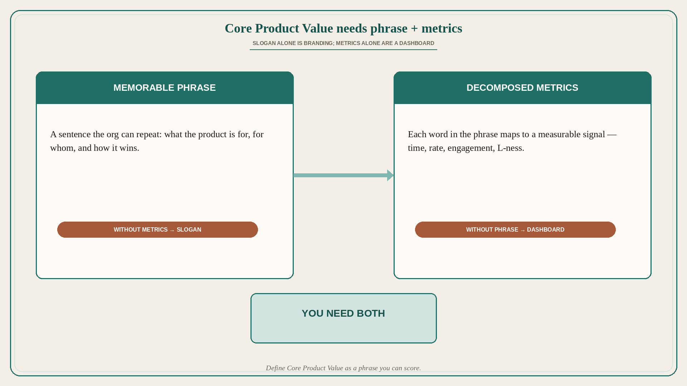

Core Product Value needs phrase + metrics
Source: Lenny Rachitsky / Peter Sellis (@lennysan)
original post
What it claims
Define a “Core Product Value” that is both a memorable phrase and a set of metrics that measure it. At Snap: “the fastest way to share a moment with the people you care about” — decomposed into time-to-load, camera-open-to-share rate, and best-friends engagement. At Discord: “the best way to talk and hang out with your friends before, during, and after playing games” — with L7 / L-ness in the growth playbooks. The phrase without metrics is a slogan; the metrics without the phrase are a dashboard. You need both.
Why it matters for a PO
Teams argue features because “value” is either a tagline no one can score or a wall of KPIs no one can narrate. A PO who owns a one-sentence Core Product Value and the metrics that decompose each clause can cut roadmap noise: if a bet does not move a clause’s metric, it is not core work.
3 takeaways
- Write the Core Product Value as a phrase every stakeholder can repeat without slides.
- Map each clause of the phrase to at least one leading metric you can inspect weekly.
- Reject bets that touch neither the phrase nor its metrics — they are decoration.
Practice this week
Draft one Core Product Value sentence for your product. Under it, list 3–5 metrics that decompose the words (speed, completion, who, frequency). Share both in the next refinement or stakeholder sync and ask: which current backlog items move none of these? Park or kill those first.